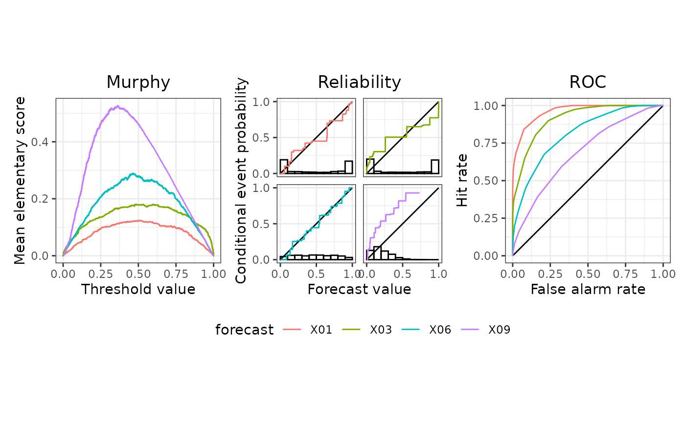
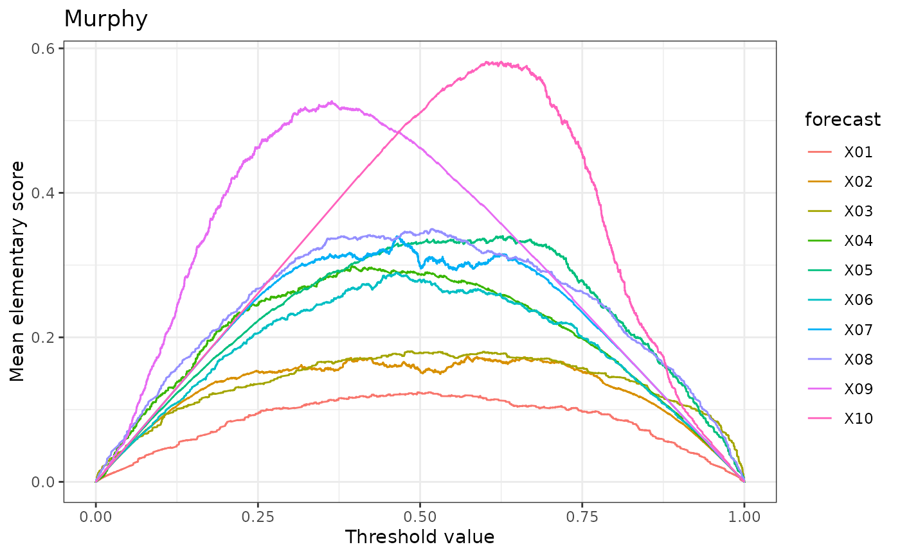
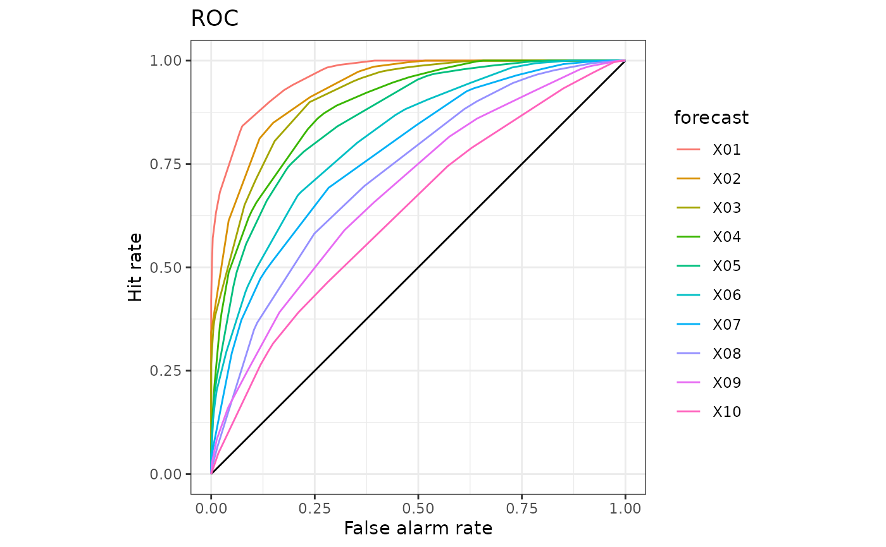

Plot methods for the triptych classes
Usage
# S3 method for triptych
plot(x, ...)
# S3 method for triptych
autoplot(object, ...)
# S3 method for triptych_murphy
plot(x, ...)
# S3 method for triptych_murphy
autoplot(object, ...)
# S3 method for triptych_reliability
plot(x, ...)
# S3 method for triptych_reliability
autoplot(object, ..., breaks = seq(0, 1, length.out = 11))
# S3 method for triptych_roc
plot(x, ...)
# S3 method for triptych_roc
autoplot(object, ...)
# S3 method for triptych_mcbdsc
plot(x, ...)
# S3 method for triptych_mcbdsc
autoplot(
object,
...,
n_isolines = 10,
colour_values = "black",
colour_unc = "#00BF7D",
MCBDSC_repel = FALSE,
MCB_lim = NA,
DSC_lim = NA
)Arguments
- x
An object that inherits from one of the triptych classes.
- ...
Arguments passed from
autoplot.triptych()to the other methods for triptych classes.- object
An object that inherits from one of the triptych classes.
- breaks
A vector of bin boundaries for the
geom_histogram()layer. Set toNAto disable.- n_isolines
The number of isolines showing mean scores.
- colour_values
A colour specification passed to the
valuesargument ofscale_colour_manual(). Recycled if length 1.- colour_unc
A colour specification highlighting the UNC component layers.
- MCBDSC_repel
A boolean value indicating whether labels should be placed by the
ggrepelpackage.- MCB_lim
The plot limits for the x-axis (the MCB component).
- DSC_lim
The plot limits for the y-axis (the DSC component).
Value
For an object of class 'triptych': A patchwork object (invisibly).
For all other triptych objects: A ggplot object (invisibly).
Every plot() method wraps the corresponding autoplot() method,
followed by an explicit print() call.
That is, it always draws a plot, even during assignment or within a loop.
Examples
data(ex_binary, package = "triptych")
tr <- triptych(ex_binary)
dplyr::slice(tr, 1, 3, 6, 9) |> autoplot()

autoplot(tr$murphy)

autoplot(tr$reliability)
autoplot(tr$roc)

autoplot(tr$mcbdsc)
#> Error in construct_abline(mapping = mapping, data = data, slope = slope, intercept = intercept, show.legend = show.legend, na.rm = na.rm, ..., label.r = label.r, label.padding = label.padding, layername = "geom_labelabline()", super = GeomLabelabline): Problem while converting geom to grob.
#> ℹ Error occurred in the 3rd layer.
#> Caused by error in `txt$shape[, shape_vars]`:
#> ! Can't subset columns that don't exist.
#> ✖ Column `x_midpoint` doesn't exist.